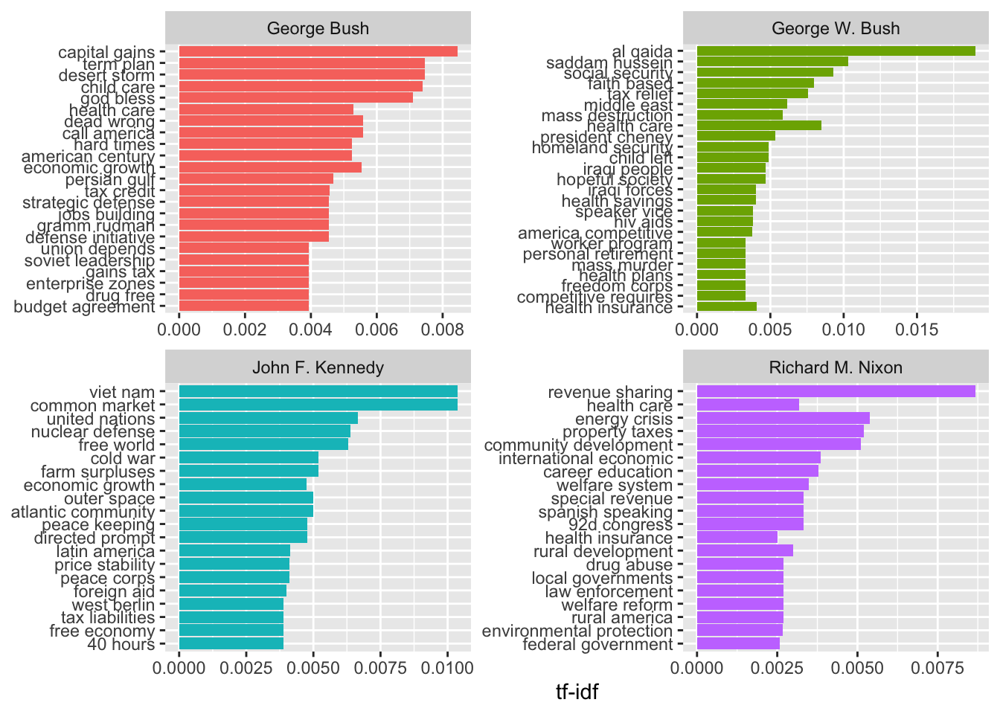
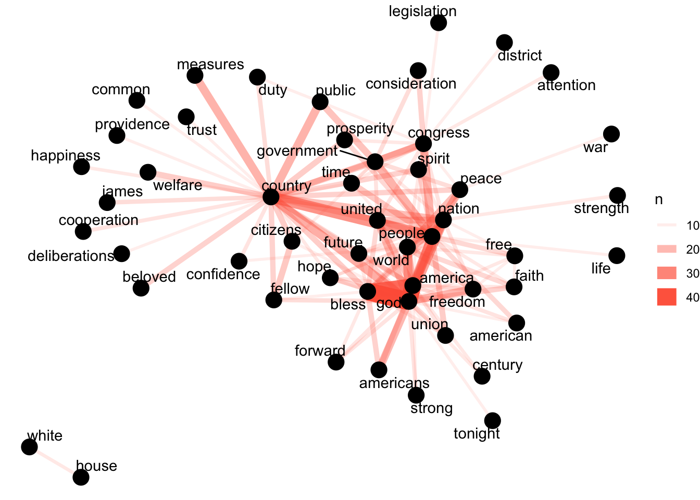
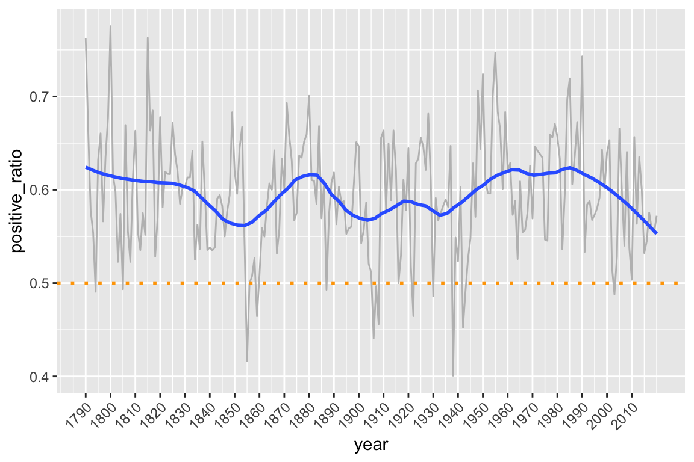

Chapter 2 Analyzing Texts
Learning Objectives
- perform basic text analysis operations in R
- determine differnd kinds of frequency counts
- use the
widyrpackage to calculate co-ocurrance- use
igraphandggraphto plot a co-ocurrance graph- import and export a Document-Term Matrix into
tidytext- use the
sentimentsdataset fromtidytextto perform a sentiment analysis
Now that we’ve read in our text and metadata, tokenized and cleaned it a little, let’s move on to some analysis.
First, we’ll make sure we have loaded the libraries we’ll need.
library(tidyverse)
library(tidytext)Let’s remind ourselves of what our data looks like.
tidy_sotu_words#> # A tibble: 778,161 x 7
#> president year years_active party sotu_type doc_id word
#> <chr> <int> <chr> <chr> <chr> <chr> <chr>
#> 1 Abraham Lin… 1861 1861-1865 Republ… written abraham-linc… fellow
#> 2 Abraham Lin… 1861 1861-1865 Republ… written abraham-linc… citizens
#> 3 Abraham Lin… 1861 1861-1865 Republ… written abraham-linc… senate
#> 4 Abraham Lin… 1861 1861-1865 Republ… written abraham-linc… house
#> 5 Abraham Lin… 1861 1861-1865 Republ… written abraham-linc… represe…
#> 6 Abraham Lin… 1861 1861-1865 Republ… written abraham-linc… midst
#> 7 Abraham Lin… 1861 1861-1865 Republ… written abraham-linc… unprece…
#> 8 Abraham Lin… 1861 1861-1865 Republ… written abraham-linc… politic…
#> 9 Abraham Lin… 1861 1861-1865 Republ… written abraham-linc… troubles
#> 10 Abraham Lin… 1861 1861-1865 Republ… written abraham-linc… gratitu…
#> # … with 778,151 more rows2.1 Frequencies
Since our unit of analysis at this point is a word, let’s do some straightforward counting to figure out which words occur most frequently in the corpus as a whole.
tidy_sotu_words %>%
count(word, sort = TRUE)#> # A tibble: 29,558 x 2
#> word n
#> <chr> <int>
#> 1 government 7573
#> 2 congress 5759
#> 3 united 5102
#> 4 people 4219
#> 5 country 3564
#> 6 public 3413
#> 7 time 3138
#> 8 war 2961
#> 9 american 2853
#> 10 world 2581
#> # … with 29,548 more rowsWe could start adding in a bit of visualization here. Let’s show the most frequent words that occur more than 2000 times.
tidy_sotu_words %>%
count(word, sort = TRUE) %>%
filter(n > 2000) %>%
mutate(word = reorder(word, n)) %>%
ggplot(aes(word, n)) +
geom_col() +
xlab(NULL) +
coord_flip()What if we’re interested in most used words per speech?
# Count words by book
doc_words <- tidy_sotu_words %>%
count(doc_id, word, sort = TRUE)
# Calculate the total number of words by book and save them to a tibble
total_words <- doc_words %>%
group_by(doc_id) %>%
summarize(total = sum(n))
# Join the total column with the rest of the data so we can calculate frequency
doc_words <- left_join(doc_words, total_words)
doc_words #> # A tibble: 352,846 x 4
#> doc_id word n total
#> <chr> <chr> <int> <int>
#> 1 harry-s-truman-1946.txt dollars 207 12614
#> 2 jimmy-carter-1980b.txt congress 204 16128
#> 3 harry-s-truman-1946.txt war 201 12614
#> 4 william-howard-taft-1910.txt government 164 11178
#> 5 james-k-polk-1846.txt mexico 158 7023
#> 6 richard-m-nixon-1974b.txt federal 141 9996
#> 7 harry-s-truman-1946.txt million 138 12614
#> 8 harry-s-truman-1946.txt fiscal 129 12614
#> 9 jimmy-carter-1981.txt administration 129 16595
#> 10 william-howard-taft-1912.txt government 129 10215
#> # … with 352,836 more rowsLet’s graph the top words per book.
doc_words %>%
filter(n > 100) %>%
ggplot(aes(word, n, fill = doc_id)) +
geom_col() +
xlab(NULL) +
coord_flip()That’s cool looking, but let’s split it into facets so we can see by speech.
doc_words %>%
filter(n > 100) %>%
ggplot(aes(word, n, fill = doc_id)) +
geom_col(show.legend = FALSE) +
xlab(NULL) +
facet_wrap(~doc_id, ncol = 2) +
theme(axis.text.x = element_text(angle = 90, hjust = 1))We could keep cleaning this figure up by setting some minimum sizing, determining the spacing between y-axis labels better, and so forth, but for now we’ll accept it as showing some sense of variation across speeches where certain words are used most.
What if we want to check the most common words per speech for a single president? We could filter this doc_words dataset based on the president’s name being in the doc_id, but I think it’s easier to filter from the initial tidy data and recount.
tidy_sotu_words %>%
filter(president == "Barack Obama") %>%
count(doc_id, word, sort = TRUE) %>%
filter(n > 20) %>%
ggplot(aes(word, n, fill=doc_id)) +
geom_col() +
facet_wrap(~doc_id, ncol = 2) +
theme(axis.text.x = element_text(angle = 90, hjust = 1))2.2 Term frequency
Sometimes, a raw count of a word is less important than understanding how often that word appears in respect to the total number of words in a text. This ratio would be the term frequency.
doc_words <- doc_words %>%
mutate(term_freq = n / total)
doc_words #> # A tibble: 352,846 x 5
#> doc_id word n total term_freq
#> <chr> <chr> <int> <int> <dbl>
#> 1 harry-s-truman-1946.txt dollars 207 12614 0.0164
#> 2 jimmy-carter-1980b.txt congress 204 16128 0.0126
#> 3 harry-s-truman-1946.txt war 201 12614 0.0159
#> 4 william-howard-taft-1910.txt government 164 11178 0.0147
#> 5 james-k-polk-1846.txt mexico 158 7023 0.0225
#> 6 richard-m-nixon-1974b.txt federal 141 9996 0.0141
#> 7 harry-s-truman-1946.txt million 138 12614 0.0109
#> 8 harry-s-truman-1946.txt fiscal 129 12614 0.0102
#> 9 jimmy-carter-1981.txt administration 129 16595 0.00777
#> 10 william-howard-taft-1912.txt government 129 10215 0.0126
#> # … with 352,836 more rowsLet’s graph the term frequency for one of these speeches so we can understand the frequency distribution of words over a text.
doc_words %>%
filter(doc_id == "harry-s-truman-1946.txt") %>%
ggplot(aes(term_freq)) +
geom_histogram(show.legend = FALSE) +
xlim(NA, .012)This distribution makes sense. Most words are used relatively rarely in a text. Only a few have a high term frequency.
We could keep filtering this data to see which terms have high frequency, thus maybe increased significance, for different presidents and different particular speeches. We could also subset based on decade, and get a sense of what was important in each decade. We’re going to take a slightly different approach though. We’ve been looking at term frequency per document. What if we want to know about words that seem more important based on the contents of the entire corpus?
2.3 Tf-idf
For this, we can use term-frequency according to inverse document frequency (tf-idf). Tf-idf measures how important a word is within a corpus by scaling term frequency per document according to the inverse of the term’s document frequency (number of documents within the corpus in which the term appears divided by the number of documents).
We could write our own function for tf-idf, but in this case we’ll take advantage of tidytext’s implementation.
doc_words <- doc_words %>%
bind_tf_idf(word, doc_id, n)
doc_words#> # A tibble: 352,846 x 8
#> doc_id word n total term_freq tf idf tf_idf
#> <chr> <chr> <int> <int> <dbl> <dbl> <dbl> <dbl>
#> 1 harry-s-truman-… dollars 207 12614 0.0164 0.0164 0.612 1.00e-2
#> 2 jimmy-carter-19… congress 204 16128 0.0126 0.0126 0.00425 5.37e-5
#> 3 harry-s-truman-… war 201 12614 0.0159 0.0159 0.0345 5.50e-4
#> 4 william-howard-… governme… 164 11178 0.0147 0.0147 0.00425 6.23e-5
#> 5 james-k-polk-18… mexico 158 7023 0.0225 0.0225 0.810 1.82e-2
#> 6 richard-m-nixon… federal 141 9996 0.0141 0.0141 0.293 4.14e-3
#> 7 harry-s-truman-… million 138 12614 0.0109 0.0109 0.728 7.96e-3
#> 8 harry-s-truman-… fiscal 129 12614 0.0102 0.0102 0.494 5.05e-3
#> 9 jimmy-carter-19… administ… 129 16595 0.00777 0.00777 0.282 2.19e-3
#> 10 william-howard-… governme… 129 10215 0.0126 0.0126 0.00425 5.36e-5
#> # … with 352,836 more rowsThe tf-idf value will be:
- lower for words that appear in many documents in the corpus, and lowest when the word occurs in virtually all documents.
- high for words that appear many times in few documents in the corpus, this lending high discriminatory power to those documents.
Let’s look at some of the words in the corpus that have the highest tf-idf scores, which means words that are particularly distinctive for their documents.
doc_words %>%
select(-total) %>%
arrange(desc(tf_idf))#> # A tibble: 352,846 x 7
#> doc_id word n term_freq tf idf tf_idf
#> <chr> <chr> <int> <dbl> <dbl> <dbl> <dbl>
#> 1 lyndon-b-johnson-1966.txt vietnam 32 0.0152 0.0152 2.42 0.0367
#> 2 jimmy-carter-1980a.txt soviet 31 0.0218 0.0218 1.47 0.0321
#> 3 george-w-bush-2003.txt hussein 19 0.00811 0.00811 3.85 0.0313
#> 4 george-w-bush-2003.txt saddam 19 0.00811 0.00811 3.67 0.0298
#> 5 franklin-d-roosevelt-1943… 1942 13 0.00758 0.00758 3.85 0.0292
#> 6 dwight-d-eisenhower-1961.… 1953 23 0.00747 0.00747 3.85 0.0288
#> 7 john-adams-1800.txt gentlem… 8 0.0153 0.0153 1.80 0.0275
#> 8 benjamin-harrison-1892.txt 1892 40 0.00741 0.00741 3.52 0.0261
#> 9 franklin-d-roosevelt-1942… hitler 7 0.00527 0.00527 4.77 0.0251
#> 10 herbert-hoover-1930.txt 1928 14 0.00711 0.00711 3.52 0.0250
#> # … with 352,836 more rowsThese results seem appropriate given our history. To understand the occurrence of the years we might need to look more closely at the speeches themselves, and determine whether the years are significant or whether they need to be removed from the text. It might be that even if they don’t need to be removed from the text overall, they still need to be filtered out within the context of this analysis.
In the same way that we narrowed our analysis to Obama speeches earlier, we could subset the corpus before we calculate the tf-idf score to understand which words are most important for a single president within their sotu speeches. Let’s do that for Obama.
obama_tf_idf <- tidy_sotu_words %>%
filter(president == "Barack Obama") %>%
count(doc_id, word, sort = TRUE) %>%
bind_tf_idf(word, doc_id, n) %>%
arrange(desc(tf_idf))
obama_tf_idf#> # A tibble: 10,656 x 6
#> doc_id word n tf idf tf_idf
#> <chr> <chr> <int> <dbl> <dbl> <dbl>
#> 1 barack-obama-2016.txt voices 8 0.00372 2.08 0.00773
#> 2 barack-obama-2014.txt cory 9 0.00322 2.08 0.00671
#> 3 barack-obama-2015.txt rebekah 7 0.00273 2.08 0.00567
#> 4 barack-obama-2012.txt unit 7 0.00255 2.08 0.00531
#> 5 barack-obama-2016.txt isil 8 0.00372 1.39 0.00515
#> 6 barack-obama-2009.txt restart 5 0.00221 2.08 0.00460
#> 7 barack-obama-2013.txt reduction 6 0.00220 2.08 0.00458
#> 8 barack-obama-2015.txt childcare 8 0.00312 1.39 0.00432
#> 9 barack-obama-2011.txt brandon 5 0.00197 2.08 0.00409
#> 10 barack-obama-2015.txt economics 5 0.00195 2.08 0.00405
#> # … with 10,646 more rowsBased on what you know of the Obama years and sotu speeches generally, how would you interpret these results?
Let’s try graphing these results, showing the top tf-idf terms per speech for Obama’s speeches.
obama_tf_idf %>%
group_by(doc_id) %>%
mutate(word = factor(word, levels = rev(unique(word)))) %>%
group_by(doc_id) %>%
top_n(5) %>%
ungroup() %>%
ggplot(aes(word, tf_idf, fill = doc_id)) +
geom_col(show.legend = FALSE) +
labs(x = NULL, y = "tf-idf") +
facet_wrap(~doc_id, ncol = 2, scales = "free") +
coord_flip() +
theme(axis.text.y = element_text(angle = 45)) 
2.4 N-Grams
We mentioned n-grams in the intro, but let’s revisit them here and take a look at the most common bigrams in the speeches. Remember this is what we get back:
sotu_whole %>%
unnest_tokens(bigram, text, token = "ngrams", n = 2) # create bigram#> # A tibble: 1,964,976 x 7
#> president year years_active party sotu_type doc_id bigram
#> <chr> <int> <chr> <chr> <chr> <chr> <chr>
#> 1 Abraham Lin… 1861 1861-1865 Repub… written abraham-lin… fellow ci…
#> 2 Abraham Lin… 1861 1861-1865 Repub… written abraham-lin… citizens …
#> 3 Abraham Lin… 1861 1861-1865 Repub… written abraham-lin… of the
#> 4 Abraham Lin… 1861 1861-1865 Repub… written abraham-lin… the senate
#> 5 Abraham Lin… 1861 1861-1865 Repub… written abraham-lin… senate and
#> 6 Abraham Lin… 1861 1861-1865 Repub… written abraham-lin… and house
#> 7 Abraham Lin… 1861 1861-1865 Repub… written abraham-lin… house of
#> 8 Abraham Lin… 1861 1861-1865 Repub… written abraham-lin… of repres…
#> 9 Abraham Lin… 1861 1861-1865 Repub… written abraham-lin… represent…
#> 10 Abraham Lin… 1861 1861-1865 Repub… written abraham-lin… in the
#> # … with 1,964,966 more rowsLet’s see the most common bigrams:
sotu_whole %>%
unnest_tokens(bigram, text, token = "ngrams", n = 2) %>%
count(bigram, sort = TRUE) # count ocurrences and sord descending#> # A tibble: 469,092 x 2
#> bigram n
#> <chr> <int>
#> 1 of the 33610
#> 2 in the 12499
#> 3 to the 11643
#> 4 for the 6892
#> 5 and the 6224
#> 6 by the 5606
#> 7 of our 5172
#> 8 the united 4767
#> 9 united states 4760
#> 10 it is 4756
#> # … with 469,082 more rowsOk, so we again need to remove the stopwords. This time let’s use dplyr’s filter function for this. And before that we will separate the two words into two columns.
sotu_bigrams <- sotu_whole %>%
unnest_tokens(bigram, text, token = "ngrams", n = 2) %>%
separate(bigram, c("word1", "word2"), sep = " ") %>% # separate into cols
filter(!word1 %in% stop_words$word) %>% # remove stopwords
filter(!word2 %in% stop_words$word)
sotu_bigrams %>%
count(word1, word2, sort = TRUE)#> # A tibble: 129,622 x 3
#> word1 word2 n
#> <chr> <chr> <int>
#> 1 federal government 479
#> 2 american people 428
#> 3 june 30 325
#> 4 fellow citizens 296
#> 5 public debt 283
#> 6 public lands 256
#> 7 health care 240
#> 8 social security 232
#> 9 post office 202
#> 10 annual message 200
#> # … with 129,612 more rows(Bonus question: What happened on that June 30th?)
A bigram can also be treated as a term in a document in the same way that we treated individual words. That means we can look at tf-idf values in the same way.
First we will re-unite the two word columns again, and then generate the tf-idf count as above.
bigram_tf_idf <- sotu_bigrams %>%
unite(bigram, word1, word2, sep = " ") %>% # combine columns
count(president, bigram) %>%
bind_tf_idf(bigram, president, n) %>%
arrange(desc(tf_idf))What makes the speeches of different presidents unique?
Let’s pick a few presidents and plot their highest scoring tf-idf values here.
potus <- c("John F. Kennedy", "Richard M. Nixon", "George Bush", "George W. Bush")
bigram_tf_idf %>%
filter(president %in% potus) %>%
group_by(president) %>%
top_n(20) %>%
ggplot(aes(reorder(bigram, tf_idf), tf_idf, fill = president)) +
geom_col(show.legend = FALSE) +
labs(x = NULL, y = "tf-idf") +
facet_wrap(~president, scales = "free", nrow = 2) +
coord_flip()
2.5 Co-occurrence
Co-occurrences give us a sense of words that appear in the same text, but not necessarily next to each other.
For this section we will make use of the widyr package. It allows us to turn our table into a wide matrix. In our case that matrix will be made up of the individual words and the cell values will be the counts of how many times they co-occur. Then we will turn the matrix back into a tidy form, where each row contains the word pairs and the count of their co-occurrence. This lets us count common pairs of words co-appearing within the same speech.
The function which helps us do this is the pairwise_count() function.
Since processing the entire corpus would take too long here, we will only look at the last 20 words of each speech.
library(widyr)
# extract last 100 words from text
sotu_whole$speech_end <- word(sotu_whole$text, -100, end = -1)
sotu_word_pairs <- sotu_whole %>%
unnest_tokens(word, speech_end) %>%
filter(!word %in% stop_words$word) %>% # remove stopwords
pairwise_count(word, doc_id, sort = TRUE, upper = FALSE) # don't include upper triangle of matrix
sotu_word_pairs#> # A tibble: 125,576 x 3
#> item1 item2 n
#> <chr> <chr> <dbl>
#> 1 god bless 37
#> 2 god america 35
#> 3 bless america 30
#> 4 people country 26
#> 5 world god 22
#> 6 god people 22
#> 7 government people 21
#> 8 congress people 21
#> 9 public country 21
#> 10 god nation 21
#> # … with 125,566 more rowsTo plot the co-occurrence network, we use the igraph library to convert our table into a network graph and ggraph which adds functionality to ggplot and makes it easier to create a network plot.
library(igraph)
library(ggraph)
sotu_word_pairs %>%
filter(n >= 10) %>% # only word pairs that occur 10 or more times
graph_from_data_frame() %>% #convert to graph
ggraph(layout = "fr") + # place nodes according to the force-directed algorithm of Fruchterman and Reingold
geom_edge_link(aes(edge_alpha = n, edge_width = n), edge_colour = "tomato") +
geom_node_point(size = 5) +
geom_node_text(aes(label = name), repel = TRUE,
point.padding = unit(0.2, "lines")) +
theme_void()
There are alternative approaches for this as well. See for example the findAssocs function in the tm package.
2.6 Document-Term Matrix
A document-term matrix (DTM) is a format which is frequently used in text analysis. It is a matrix where we can see the counts of each term per document. In a DTM each row represents a document, each column represents a term, and the cell values are the counts of the occurrences of the term for the particular document.
tidytext provides functionality to convert to and from DTMs, if for example, your analyis requires specific functions that require you to use a different R package which only works with DTM objects.
The cast_dtm function can be used to create a DTM object from a tidy table.
Let’s assume that for some reason we want to use the findAssoc function from the tm package.
First we use dplyr to create a table with the document name, the term, and the count.
# make a table with document, term, count
tidy_sotu_words %>%
count(doc_id, word) #> # A tibble: 352,846 x 3
#> doc_id word n
#> <chr> <chr> <int>
#> 1 abraham-lincoln-1861.txt 1,470,018 1
#> 2 abraham-lincoln-1861.txt 1,500 1
#> 3 abraham-lincoln-1861.txt 100,000 1
#> 4 abraham-lincoln-1861.txt 102,532,509.27 1
#> 5 abraham-lincoln-1861.txt 12,528,000 1
#> 6 abraham-lincoln-1861.txt 13,606,759.11 1
#> 7 abraham-lincoln-1861.txt 1830 1
#> 8 abraham-lincoln-1861.txt 1859 1
#> 9 abraham-lincoln-1861.txt 1860 2
#> 10 abraham-lincoln-1861.txt 1861 6
#> # … with 352,836 more rowsNow we cast it as a DTM.
sotu_dtm <- tidy_sotu_words %>%
count(doc_id, word) %>%
cast_dtm(doc_id, word, n)
class(sotu_dtm)#> [1] "DocumentTermMatrix" "simple_triplet_matrix"Finally, let’s use it in the tm package.
library(tm)
# look at the terms with tm function
Terms(sotu_dtm) %>% tail()#> [1] "queretaro" "refreshments" "schleswig" "sedulous"
#> [5] "subagents" "transcript"# most frequent terms
findFreqTerms(sotu_dtm, lowfreq = 5000)#> [1] "congress" "government" "united"# find terms associated with ...
findAssocs(sotu_dtm, "citizen", corlimit = 0.5)#> $citizen
#> laws citizenship protection contained entitled government
#> 0.62 0.59 0.56 0.55 0.53 0.53
#> citizens postmaster careful question report suits
#> 0.52 0.52 0.51 0.51 0.51 0.51Conversely, tidytext implements the tidy function (originally from the broom package) to import DocumentTermMatrix objects. Note that it only takes the cells from the DTM that are not 0, so there will be no rows with 0 counts.
2.7 Sentiment analysis
tidytext comes with a dataset sentiments which contains several sentiment lexicons, where each word is attributed a certain sentiment, like this:
sentiments#> # A tibble: 6,786 x 2
#> word sentiment
#> <chr> <chr>
#> 1 2-faces negative
#> 2 abnormal negative
#> 3 abolish negative
#> 4 abominable negative
#> 5 abominably negative
#> 6 abominate negative
#> 7 abomination negative
#> 8 abort negative
#> 9 aborted negative
#> 10 aborts negative
#> # … with 6,776 more rowsHere we will take a look at how the sentiment of the speeches change over time. We will use the lexicon from Bing Liu and collaborators, which assigns positive/negative labels for each word:
bing_lex <- get_sentiments("bing")
bing_lex#> # A tibble: 6,786 x 2
#> word sentiment
#> <chr> <chr>
#> 1 2-faces negative
#> 2 abnormal negative
#> 3 abolish negative
#> 4 abominable negative
#> 5 abominably negative
#> 6 abominate negative
#> 7 abomination negative
#> 8 abort negative
#> 9 aborted negative
#> 10 aborts negative
#> # … with 6,776 more rowsSince this is a regular tibble, we can use these sentiments and join them to the words of our speeches. We will use inner_join from dplyr. Since our columns to join on have the same name (word) we don’t need to explicitly name it.
tidy_sotu_words %>%
inner_join(bing_lex) %>% # join
count(year, sentiment) # group by year and sentiment#> # A tibble: 450 x 3
#> year sentiment n
#> <int> <chr> <int>
#> 1 1790 negative 39
#> 2 1790 positive 125
#> 3 1791 negative 52
#> 4 1791 positive 103
#> 5 1792 negative 57
#> 6 1792 positive 78
#> 7 1793 negative 58
#> 8 1793 positive 72
#> 9 1794 negative 110
#> 10 1794 positive 106
#> # … with 440 more rowsFinally we can visualize it like this:
tidy_sotu_words %>%
inner_join(bing_lex) %>% # join
count(year, sentiment) %>% # group by year and sentiment
ggplot(aes(year, n, color = sentiment)) +
geom_line() +
scale_x_continuous(breaks = seq(1790, 2016, by = 10)) +
theme(axis.text.x = element_text(angle = 45, hjust = 1))